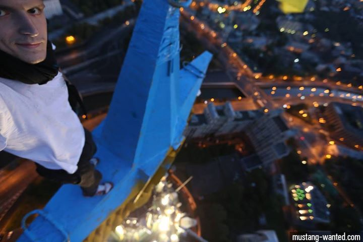

Четверо парашютистов не красили звезду на московской высотке в цвета украинского флага
20 августа интернет облетела информация о том, что звезду на легендарной сталинской 176-метровой высотке на московской Котельнической улице разрисовали в цвета флага Украины четверо молодых людей — граждан России.Все они — парашютисты.
На данный момент нет никаких доказательств того, что эта информация может быть правдивой.
Один из жителей высотки, как утверждается, случайно снял на камеру момент прыжка.

21 августа суд санкционировал домашний арест Александра Погребова, Анны Лепешкиной, Алексея Широкожухова и Евгении Коротковой до 19 октября.Им запрещено общаться с неблизкими родственниками и пользоваться любыми средствами связи.Ранее их дела переквалифицировали со статьи «вандализм» на более тяжкую статью — «хулиганство»: им грозит до семи лет колонии.Все четверо отрицают свою вину.
«Мы спортсмены, парашютисты, а не экстремисты, ничем противоправным мы не занимаемся», — рассказывал Погребов.Он настаивал, что он и его друзья не устанавливали флаг и не красили звезду, а на крыше оказались только для того, чтобы совершить прыжок с парашютом.По его словам, они прошли в здание через черный ход, поднялись на лифте на 28-й этаж и спрыгнули с крыши.«Мы находились на крыше, ниже шпиля на 40–50 м, те, кто установил флаг, были выше, мы их не видели, потому что смотрели вниз, подыскивали площадку для приземления», — объяснял Погребов.
По его словам, все четверо удачно спрыгнули, потом прошли на набережную и делали групповой снимок, когда их задержали сотрудники полиции.
«Я патриот своей страны и никогда бы не совершил нечто подобное», — настаивал Погребов, отмечая, что вандалы не стали бы прыгать со здания с парашютом и привлекать к себе столько внимания.
Друзья парашютистов в социальных сетях активно обсуждают версию, что их «подставили», а вандал до сих пор гуляет на свободе.
«Ребята эти очень хорошие.Политикой не интересуются, живут только парашютной жизнью.Приехали туда на машинах, но при задержании все пришлось сдать.За это время одной из девушек кто-то в машину подкинул баллончик с краской.Еще они не лазили на саму звезду.Для этого нужно альпснаряжение, но у них его не было.А с одними парашютами туда не залезть, они не страховочные.В любом случае есть их собственное видео, на котором прекрасно видно, откуда они прыгают.Также на них не было никаких следов краски в момент задержания», — рассказала «Газете.Ru» подруга задержанных Елена Авдеева.
Она добавила, что ребята снимали прыжок на видео и никуда не убегали, а продолжали фотографироваться на набережной, где их и задержали.
В то же время 22 августа украинский спортсмен-руфер (человек, хобби которого — подниматься на крыши — Stopfake) Григорий, известный под ником Mustang Wanted, признался в покраске звезды, подкрепив свои слова фотодоказательством.
Тем не менее это не заставило суд изменить меру пресечения для подозреваемых.Парашютисты по-прежнему пребывают под домашним арестом.О каких-либо доказательствах их вины официально не сообщалось.
Posted On: 2014-08-30T21:00:00
Content Date: 2014-08-30
Download Date: 2021-07-16
Document ID: L0C04FG34